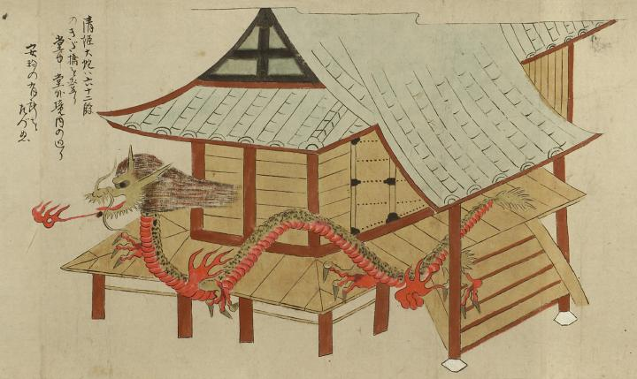

清姫；キヨヒメ，大蛇；ダイジャ，龍；リュウ，炎；ホノオ

大蛇となった清姫が宙に浮かびお堂の周囲を通り過ぎる。背中には黒い斑点のような鱗があり、蛇腹と胴体から直接はえた3本指は赤く、大きく開けた口から舌をのぞかせ、たてがみをなびかせている。口からは火焔を吐き、胴体の周囲にも火焔のようなものがある。詞書には「清姫大蛇は六十二段のきだ橋を登り堂中堂外境内の廻り安珍の有所をたづぬ」とある。
出典：親書誌：U426_nichibunken_0055：道成寺縁起；ドウジョウジエンギ／日付：2006／資源識別子：U426_nichibunken_0055_0006_0000
Copyright (c)2010- International Research Center for Japanese Studies, Kyoto, Japan. All rights reserved.